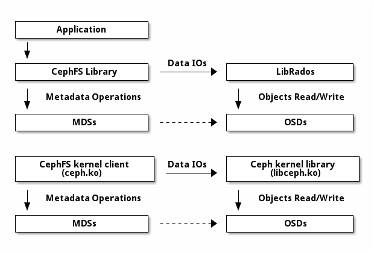

Notice
This document is for a development version of Ceph.
Ceph 文件系统 IO 路径
CephFS 里的所有文件数据都存储成了 RADOS 对象，客户端们可以直接访问 RADOS 来操作文件数据。 MDS 只处理元数据操作。
要读、写一个 CephFS 文件，客户端需要有对应 inode 上的 “file read/write” 能力。 如果客户端没有必需的能力，它会向 MDS 发送 “cap message” ， 告诉 MDS 它想要什么。如果可能的话， MDS 会把所需的能力发给客户端。 一旦客户端有了 “file read/write” 能力，它就能直接访问 RADOS ， 以读取、写入文件数据了。文件数据以 RADOS 对象存储， 名字格式是 <inode number>.<object index> 。 更多信息见 体系结构 的“数据条带化”一节。如果某个文件只被一个客户端打开了， MDS 也只会这个客户端发放 “file cache/buffer” 能力。 “file cache” 能力的含义是，文件读取操作可以由客户端缓存来满足。 “file buffer” 能力的含义是，文件的写入可以缓冲在客户端缓存中。

Brought to you by the Ceph Foundation
The Ceph Documentation is a community resource funded and hosted by the non-profit Ceph Foundation. If you would like to support this and our other efforts, please consider joining now.